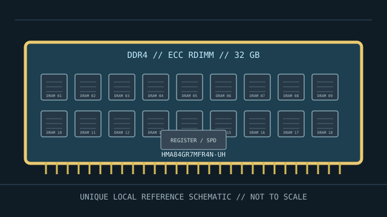

[ REGISTERED ECC SERVER MODULE // MEMORY / RAM ]
SK hynix HMA84GR7MFR4N-UH
SK hynix HMA84GR7MFR4N-UH is a 32 GB DDR4-2400 dual-rank x4 ECC registered server module.

PART ID: HMA84GR7MFR4N-UH. This is a specific manufacturer module, not a generic DIMM standard. Verify full label, revision and SPD data on the specimen before using it for a service or compatibility decision.
Module specifications
| Manufacturer / part number | SK hynix HMA84GR7MFR4N-UH |
|---|---|
| Module class | 288-pin DDR4 ECC Registered DIMM (RDIMM) |
| Capacity | 32 GB per module |
| Memory generation / data rate | DDR4-2400 (2400 MT/s; PC4-19200) |
| Error correction / buffering | System-level ECC module; registered/buffered command-address interface (RDIMM) |
| Rank / device organization | 2Rx4 (dual rank, x4 DRAM organization); x4 DRAM organization; dual-rank module |
| Timing / voltage | CL17, per module listing; nominal module voltage 1.2 V |
| Form factor | 288-pin DDR4 ECC Registered DIMM (RDIMM); contact count and keying are generation-specific |
| Compatibility | Compatible only with servers/workstations specifying DDR4 ECC RDIMM support for this capacity and 2Rx4 organization. Check the system memory population rules; actual frequency depends on the processor, DIMM count, firmware and system validation. |
Platform compatibility & service notes
Compatible only with servers/workstations specifying DDR4 ECC RDIMM support for this capacity and 2Rx4 organization. Check the system memory population rules; actual frequency depends on the processor, DIMM count, firmware and system validation.
- Match DDR generation, ECC and registered buffering independently; a mechanically similar UDIMM or LRDIMM is not interchangeable unless the host documentation explicitly allows it.
- Confirm CPU memory-controller capability, firmware, supported rank and DRAM density, maximum capacity per slot, and channel population rules in the server service manual and qualified-memory list.
- The printed transfer rate is a module rating. The configured rate can be lower because of the CPU, number of DIMMs per channel, ranks, firmware policy or other installed modules.
- Power down and follow the host service procedure. Use ESD precautions, handle by the edges and keep the original label and SPD record with the archived specimen.
Archival fields
Record the complete SKU, suffix and revision/date code; photograph both module sides; preserve SPD data, host model and CPU, BIOS/BMC version, socket/channel location, memory-test results and any ECC event counters. Reconfirm all traits against the physical sample because component revisions may vary.
Product sources & compatibility reference
- CompuRAM — SK hynix HMA84GR7MFR4N-UH module detailsExact module record for capacity, DDR4-2400 rate and organization.
- DiscTech — HMA84GR7MFR4N-UH server memoryIndependent product listing for the 32 GB registered DIMM.
- Intel Xeon E5 processor families — memory system referenceExample host-platform reference for server memory. It does not qualify this exact SKU; the platform vendor’s service manual and QVL determine actual compatibility.
Model facts are taken from the linked part listings/datasheet. Server compatibility is conditional and must be checked against the actual CPU, board, firmware and server population guide.